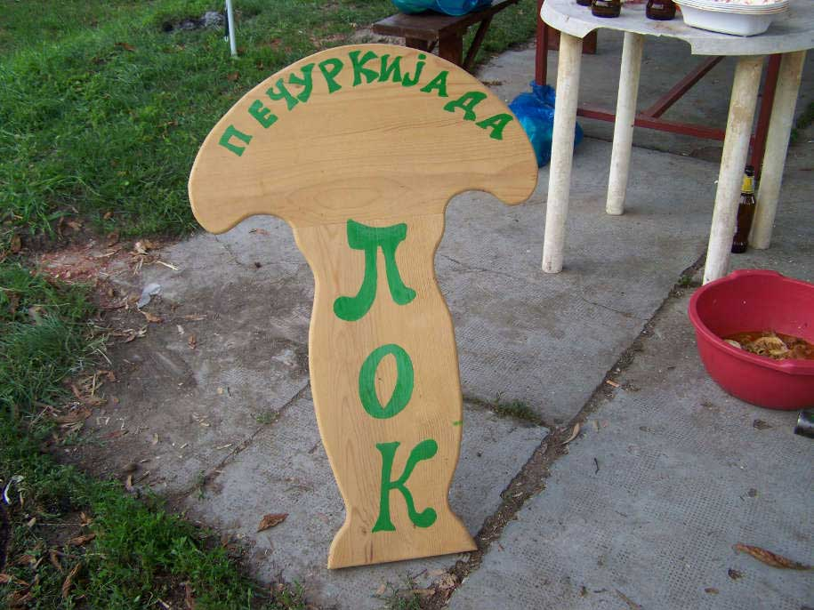
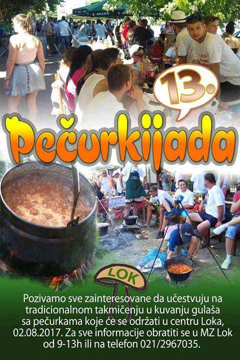
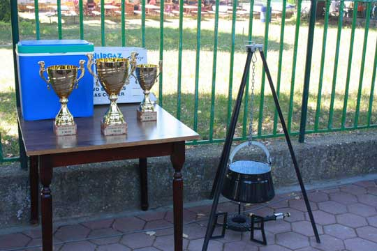
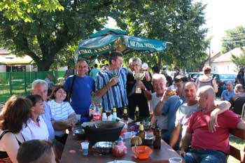
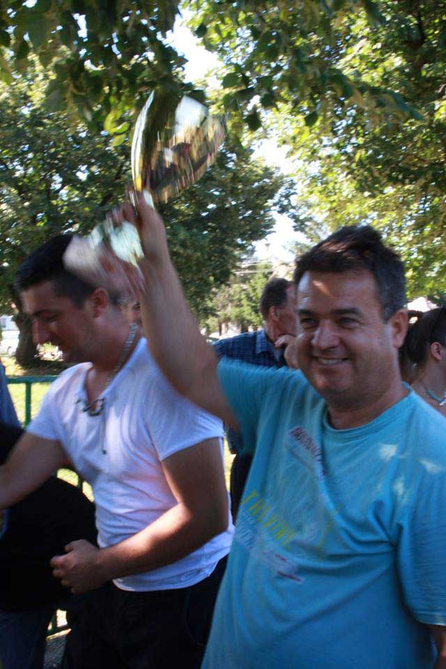
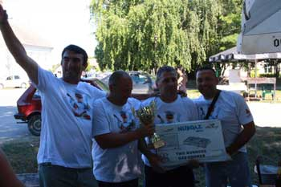

Pečurkijada
Tradicionalna letnja zanimacija Ločana je kampovanje pored Dunava, druženje uz iće i piće... Pitanje ko će da kuva nikad nije bilo problem, svaka generacija je imala svog glavnog kuvara koji je sa ponosom obavljao svoju dužnost. Ali ko je najbolji kuvar? To se svojevremeno zapitalo društvo generacije s kraja 60-tih i rešilo da dodje do odgovora... Kako? Takmičenjem. Kada? Pa kada su svi na jednom mestu, za seosku slavu (2. avgust). Za temu takmičenja je izabran gulaš sa pečurkama. Prva pečurkijada u Loku je odrzana 2004-te godine, a zatim je u godinama koje slede prerasla u brend, brend koji je i zvanično priznat ---- godine pod nazivom -----




